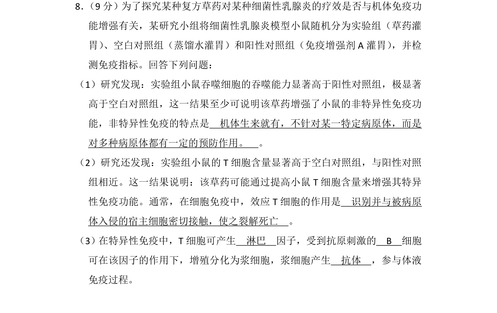
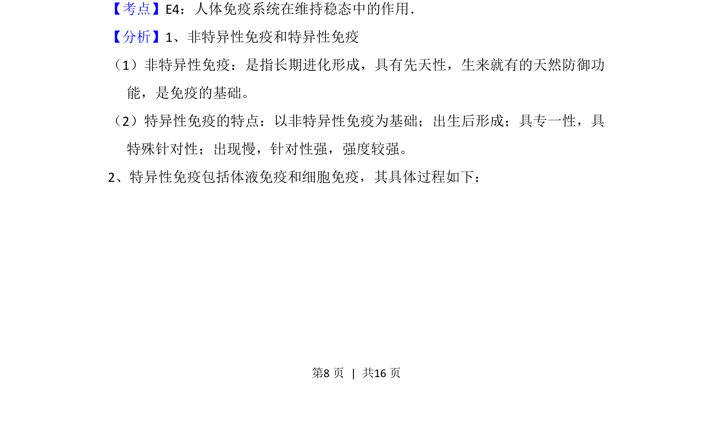
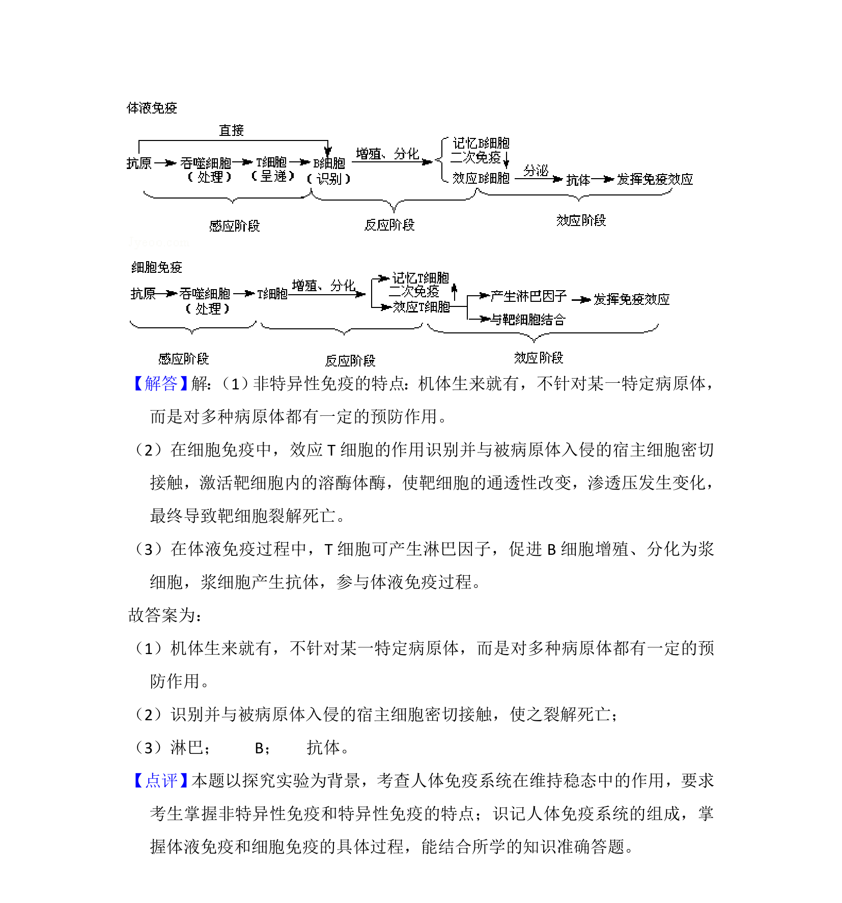

考点：人体免疫系统在维持稳态中的作用 非特异性免疫 特异性免疫 细胞免疫 体液免疫
人体免疫系统在维持稳态中的作用
非特异性免疫
特异性免疫
细胞免疫
体液免疫

探究草药对小鼠免疫功能的影响，考查非特异性免疫特点及特异性免疫过程。


📄 原 PDF 第 8 页：素材/真题/吉林/2008-2024·（吉林）生物高考真题/2014年高考生物试卷（新课标Ⅱ）（解析卷）.pdf
素材/真题/吉林/2008-2024·（吉林）生物高考真题/2014年高考生物试卷（新课标Ⅱ）（解析卷）.pdf